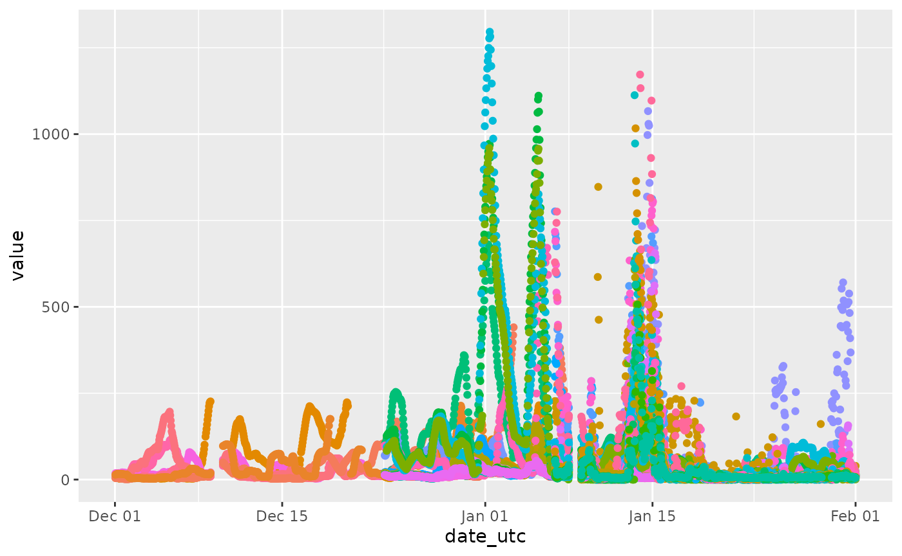

Mapping Air Quality in Australia
map-in-australia.RmdThis helps you to understand
library(airpurifyr)
library(ozmaps)
library(sf)
library(dplyr)
library(ggplot2)
library(colorspace)
library(tsibble)
library(gganimate)
all_aus_locations <- get_measurements_for_location(
country = "AU",
max_observations = 1000,
date_from = lubridate::ymd("2020-01-01"),
date_to = lubridate::ymd("2020-01-14"),
parameter = "pm25"
)
locations_of_interest <- all_aus_locations |>
# East coast of Australia (roughly)
dplyr::filter(long > 141, lat < -31) |>
dplyr::distinct(location) |>
dplyr::pull()
au_east_coast_2020 <- get_measurements_for_location(
country = "AU",
location = locations_of_interest,
max_observations = 10000,
date_from = lubridate::ymd("2019-12-01"),
date_to = lubridate::ymd("2020-02-01"),
parameter = "pm25"
)
states <- ozmaps::ozmap_states |>
filter(NAME %in% c("New South Wales", "Victoria"))
stations <- au_east_coast_2020 |>
distinct(lat, long)
ggplot(states) +
geom_sf() +
geom_point(aes(x=long, y=lat), data = stations)
time_series_stations <- au_east_coast_2020 |>
as_tsibble(index = date_utc, key = location) |>
fill_gaps(value = 1, .start = min(au_east_coast_2020$date_utc)) |>
group_by(location) |>
tidyr::fill(lat, long, .direction = "downup")
ggplot(au_east_coast_2020, aes(x = date_utc, y = value, color = location)) +
geom_point() +
guides(colour = "none")